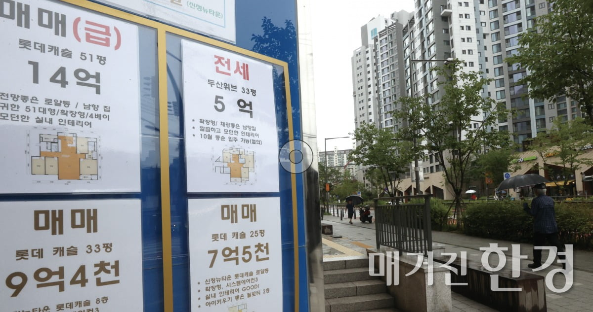

 요즘 부동산 시장에서는 MZ(밀레니얼+Z) 세대들의 젊은 바람이 불어온다. 이들이 한때 부동산 가격이 상승세를 보이고 있을 당시 ‘영끌(영혼까지 끌어 모아 투자)’과 ‘빚투(빚을 내서 하는 투자)’라는 신조어를 만들어낼 정도로 부동산 시장을 흔들었기 때문이다. 하지만 이도 잠시, 부동산이 침체기로 접어 들면서 높은 이자 비용과 집값 하락을 버텨내기 어려 워 지면서 MZ세대들이 영끌했던 물건들이 경매 시장에 속속 나타나기 시작했다.